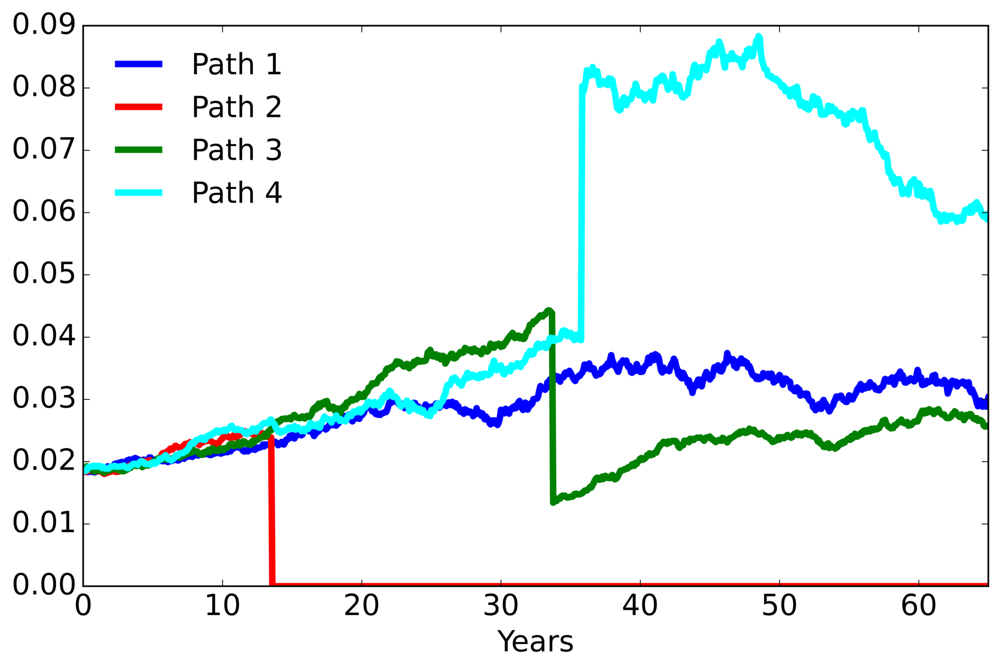
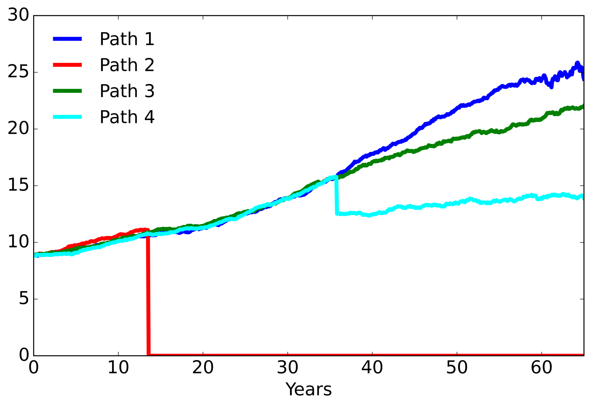
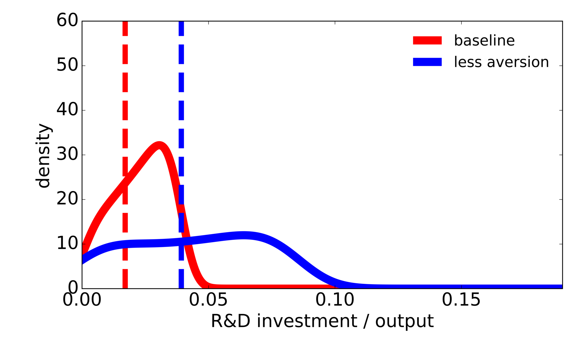

3. Stochastic Simulation#
3.1. Code variable Glossary#
3.1.1. Economic variables#
Symbol |
Description |
Formula |
|---|---|---|
\(c\) |
Consumption |
\(C_t + I_t^k + I_t^r = \alpha K_t \left (1 - \phi_0\left(B_t\right)^{\phi_1} \right)\) |
where \(B_t \overset{\mathrm{def}}{=} \left(1 - \frac {{\mathcal E}_t}{\beta \alpha K_t} \right){\mathbf 1}_{\{{\mathcal E}_t < \beta \alpha K_t\} }\).
3.1.3. Value functions#
Symbol |
Description |
|---|---|
|
Value function pre–tech jump |
|
Value function post–tech jump |
3.1.4. Distortions#
Symbol |
Description |
|---|---|
|
Temp‑anomaly adjustment \(h_y\) |
|
Capital adjustment \(h_k\) |
|
Knowledge‑capital adjustment \(h_r\) |
|
Damage jump adjustment \(g_\ell\) |
|
Tech jump adjustment \(g^L\) |
3.1.5. Probability variables#
Symbol |
Description |
|---|---|
|
Cumulative probability of a damage jump under the distorted intensities, \(1-\exp\!\left[-\int_0^t\sum_\ell \mathcal J^\ell(X_s)g_s^\ell\,ds\right]\) |
|
Cumulative probability of a technology jump under the distorted intensity, \(1-\exp\!\left[-\int_0^t\mathcal J^L(X_s)g_s^L\,ds\right]\) |
|
Baseline cumulative probability of a technology jump, \(1-\exp\!\left[-\int_0^t\mathcal J^L(X_s)\,ds\right]\) |
|
Baseline cumulative probability of a damage jump, \(1-\exp\!\left[-\int_0^t\sum_\ell\mathcal J^\ell(X_s)\,ds\right]\) |
3.1.6. Relative entropy terms#
Term |
Expression |
|---|---|
|
\(\tfrac{1}{2}\,\xi_k\,h_k^2\) |
|
\(\tfrac{1}{2}\,\xi_y\,h_y^2\) |
|
\(\tfrac{1}{2}\,\xi_r\,h_r^2\) |
|
\(\xi_t \mathcal{J}^L(1-g^L+g^L\log g^L)\) |
|
\(\xi_d \sum_\ell \mathcal{J}^\ell(1-g_\ell+g_\ell\log g_\ell)\) |
3.2. SVRD and SCGW #
By definition,
Uncertainty channel |
SVRD |
SVRD |
R&D investment / output |
R&D investment / output |
|---|---|---|---|---|
baseline (\(\xi_m = \infty\)) |
3.91 (60%) |
3.91 (38%) |
0.0066 |
0.0066 |
climate uncertainty |
4.01 (61%) |
4.10 (40%) |
0.0070 |
0.0073 |
damage uncertainty |
4.06 (62%) |
4.20 (41%) |
0.0072 |
0.0076 |
productivity uncertainty |
3.83 (59%) |
3.76 (36%) |
0.0064 |
0.0061 |
technology uncertainty |
5.93 (91%) |
8.26 (80%) |
0.0153 |
0.0296 |
all channels |
6.52 |
10.36 |
0.0185 |
0.0465 |
Uncertainty channel |
SCGW |
SCGW |
emissions |
emissions |
|---|---|---|---|---|
baseline (\(\xi_m = \infty\)) |
60.5 (51%) |
60.5 (23%) |
9.26 |
9.26 |
climate uncertainty |
62.1 (52%) |
63.5 (25%) |
9.25 |
9.23 |
damage uncertainty |
63.6 (54%) |
66.6 (26%) |
9.24 |
9.21 |
productivity uncertainty |
59.9 (50%) |
59.3 (23%) |
9.27 |
9.27 |
technology uncertainty |
103.0 (87%) |
174.1 (67%) |
8.96 |
8.58 |
all channels |
118.9 |
258.9 |
8.85 |
8.15 |
bash ./sbatch/postdamage.sh --model full_model
bash ./sbatch/postdamage_sub.sh --model full_model calibrating_xia 1
bash ./sbatch/predamage.sh --model full_model calibrating_xia 1
bash ./sbatch/feymannkacs_prepare.sh --model full_model 1
bash ./sbatch/postdamage_sub.sh --model full_model calibrating_xia 3
bash ./sbatch/predamage.sh --model full_model calibrating_xia 3
bash ./sbatch/feymannkacs_prepare.sh --model full_model 3
bash ./sbatch/postdamage.sh --model full_model --grid-profile double_resolution --initial-guess-grid-profile baseline
bash ./sbatch/predamage.sh --model full_model --grid-profile double_resolution --initial-guess-grid-profile baseline baseline_xia
bash ./sbatch/postdamage.sh --model full_model --grid-profile double_resolution --initial-guess-grid-profile baseline non_climate_channels
bash ./sbatch/postdamage_sub.sh --model full_model --grid-profile double_resolution non_climate_channels "0-19" i
bash ./sbatch/predamage.sh --model full_model --grid-profile double_resolution --initial-guess-grid-profile baseline non_climate_channels
bash ./sbatch/postdamage.sh --model full_model --grid-profile double_resolution --initial-guess-grid-profile baseline climate_channels
bash ./sbatch/postdamage_sub.sh --model full_model --grid-profile double_resolution climate_channels "0-19" i
bash ./sbatch/predamage.sh --model full_model --grid-profile double_resolution --initial-guess-grid-profile baseline climate_channels
bash ./sbatch/zeroshock_trajectories_simulate.sh --grid-profile double_resolution true false false
bash ./sbatch/zeroshock_trajectories_simulate.sh --grid-profile double_resolution non_climate_channels
bash ./sbatch/zeroshock_trajectories_simulate.sh --grid-profile double_resolution climate_channels
bash ./sbatch/datevaluereport_table.sh --grid-profile double_resolution
bash ./sbatch/update_results.sh --model full_model --grid-profile double_resolution
After the run finishes, the report writes matrix_scrd_latex.tex and matrix_scgw_latex.tex under output/tables/<dataset>/datevaluereport_table/. These already contain the values reported in Table 1 and Table 2 (the SVRD columns are divided by \(N_0 R_0\) and the SCGW columns by \(N_0\)), and the job-out prints the underlying MATRIX scrd and MATRIX scgw values.
Source scripts:
3.3. Stochastic pathways #
Figure 3 gives four stochastic pathways for the robustly optimal choice of R&D investment and emissions. The simulations are chosen to illustrate a range of possible outcomes, rather than to represent typical trajectories. The pathways were generated using the baseline probabilities with the investment and emissions decision rules computed under the less averse specification.


bash ./sbatch/postdamage.sh --model full_model
bash ./sbatch/postdamage_sub.sh --model full_model calibrating_xia 1
bash ./sbatch/predamage.sh --model full_model calibrating_xia 1
bash ./sbatch/feymannkacs_prepare.sh --model full_model 1
bash ./sbatch/postdamage_sub.sh --model full_model calibrating_xia 3
bash ./sbatch/predamage.sh --model full_model calibrating_xia 3
bash ./sbatch/postdamage.sh --model full_model --grid-profile double_resolution --initial-guess-grid-profile baseline
bash ./sbatch/predamage.sh --model full_model --grid-profile double_resolution --initial-guess-grid-profile baseline baseline_xia
bash ./sbatch/stochastic_trajectories_simulate.sh --grid-profile double_resolution 0 199 0 2
bash ./sbatch/stochastic_trajectories_plot.sh --grid-profile double_resolution 0 2
After the run finishes, you should have an output file named in a pattern similar to
rd_investment_paths.png and emissions_paths.png under
output/figures/<dataset>/stochastic_trajectories_plot/.
Source scripts:
3.4. Responses to damage-curve information #
Figure 7 and Table 4 of the paper give the “before and after” emissions and R&D investment responses to a damage information event. For the sake of illustration, the figure and table consider two different state configurations at the time when the event occurs. In both cases we assume the event occurs at a temperature anomaly of two degrees Celsius (\(\hat{y} = 2\)). We set capital stock and the knowledge stock to be the medians assuming no jump of any kind takes place in prior periods. We report results for the baseline specification and the less aversion specification (\(\xi_m = .1\)). The dashed lines give the pre-event emissions and R&D investments, and smoothed densities show post-event responses across potential damage curvatures.


\(\xi_m\) |
emissions (GtC) |
emissions (GtC) |
R&D investment / output |
R&D investment / output |
|---|---|---|---|---|
\(\infty\) |
17.8 |
15.8 |
0.017 |
0.024 |
(14.6, 18.9) |
(0.002, 0.038) |
|||
\(0.1\) |
17.2 |
14.9 |
0.039 |
0.045 |
(12.9, 19.0) |
(0.001, 0.083) |
bash sbatch/experiments/no_jump_temperature/submit_damage_density_panels.sh --ratio
bash sbatch/experiments/no_jump_temperature/submit_damage_density_panels.sh --respective-states
bash sbatch/update_results.sh --model full_model --grid-profile double_resolution --figure7-panels-only
bash sbatch/update_results.sh --model full_model --grid-profile double_resolution --table4-only
After the run finishes, under output/experiments/no_jump_temperature/figure7_panels/ you should have the Figure 7 panels respective_states/no_dots/emissions_respective_states.png and respective_states/no_dots/rd_respective_states.png, the Figure 12 panels in ratio/no_dots/, and the tables ratio/paper_pre_post.tex (Table 4) and ratio/paper_two_state_pre_post.tex (Table 32).
Source scripts:
3.1.2. Social value variables#
Symbol
Description
scrdSocial value of R&D \(\frac{\left(\frac{dV}{d\hat{r}}\right)_0 {C_0}}{\delta}\)
scgwSocial cost of global warming \(\frac{-\left(\frac{dV}{dy}\right)_0 {C_0}}{\delta}\)